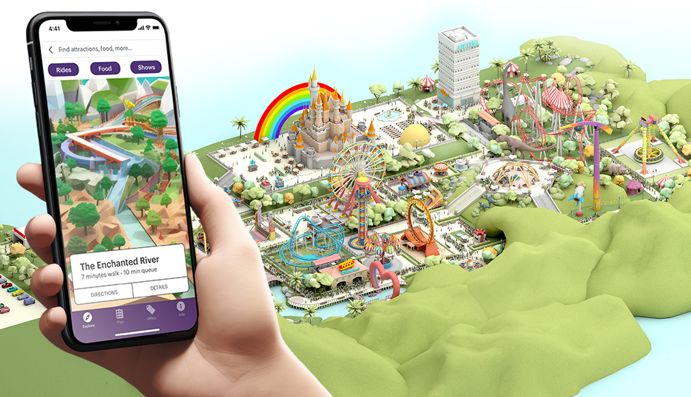
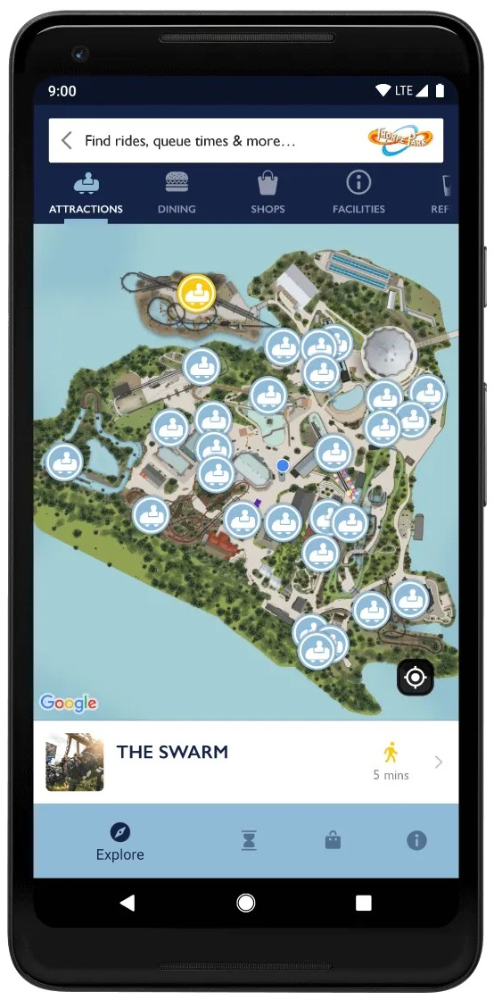
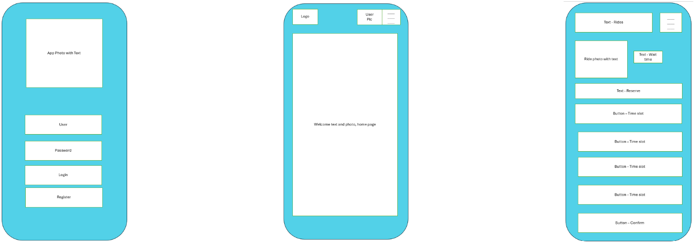
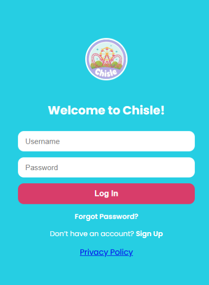
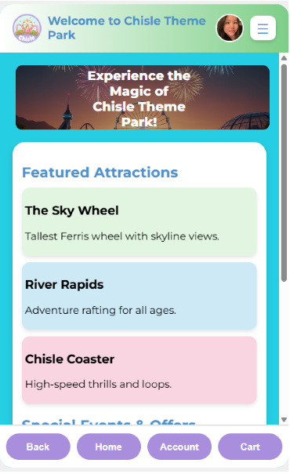
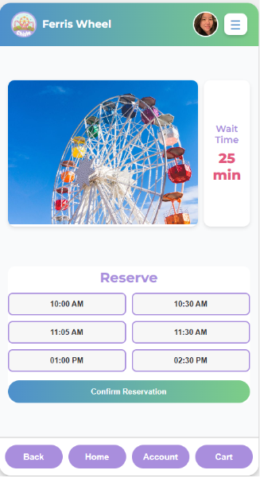
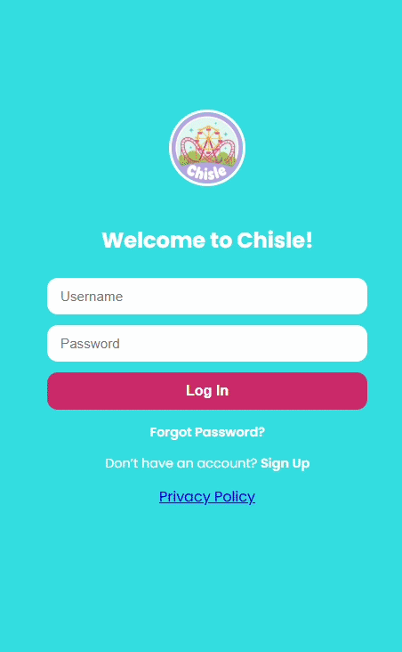
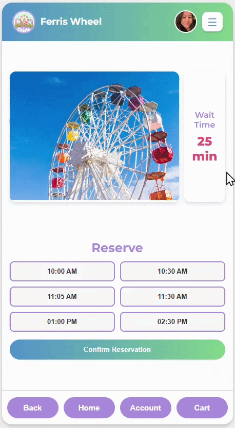

Theme Park App
Project Overview
I designed and developed Chisle Theme Park, a responsive web app prototype that allows users to log in, explore rides, check wait times, and make reservations. The app emphasizes easy navigation, mobile-first design, and quick access to key actions via a persistent bottom navigation bar.
Project Details
Tools: Figma, HTML, CSS, JavaScript Duration:1 week Focus: User flow for logging in, browsing rides, and reserving times; mobile-friendly interface, intuitive navigation.
Problem Statement
Theme parks often have complex websites or apps where users struggle to find rides, check wait times, or reserve a spot quickly. The goal of this project was to simplify the experience, making it fast and easy for users to: Log in Browse attractions Check wait times Reserve spots Navigate between pages without confusion
Design Process
Research
I analyzed several theme park apps and entertainment platforms to understand how they present rides, wait times, and reservations. I focused on navigation, visual hierarchy, and card-based layouts to see how important actions can be made easily accessible. This research guided my decisions for layout, colors, and interactive elements to improve usability.


I studied several existing theme park apps and entertainment platforms, focusing on: How ride wait times are displayed and updated Layout and accessibility of reservation systems Use of card-based designs for attraction details Placement and visibility of key navigation buttons Key insights included: Sticky bottom navigation improves usability on mobile devices Card-based layouts allow quick scanning of rides and events Highlighting action buttons (e.g., Confirm Reservation) increases user confidence Minimal design reduces visual clutter and improves readability
Wireframes
Low-fidelity wireframes helped plan the layout of the login, home, and ride pages. I tested the placement of key elements like ride cards, wait times, reservation buttons, and the bottom navigation. Wireframing ensured a clear, intuitive flow for users while keeping the interface simple and accessible.

Low-fidelity wireframes explored layout options for: Login page Home page with featured attractions and special events Ride detail page (e.g., Ferris Wheel) with wait times and reservation slots
Visual Design
The visual design uses a vibrant, minimal color palette with card-based layouts for rides and events. Typography is consistent, and buttons are highlighted to indicate interactivity. A sticky bottom navigation bar ensures users can always access Home, Account, Cart, or Back easily.



Prototype
The prototype was created in Figma with interactive, high-fidelity designs that simulate login, attraction browsing, wait time checking, and ride reservations. Scrollable content areas and a fixed bottom navigation were incorporated to demonstrate usability and intuitive flow across both desktop and mobile layouts.


Key Takeaways
This project strengthened my understanding of how visual hierarchy, spacing, and typography impact usability. It also helped me practice translating UI designs from Figma into a responsive web layout using HTML and CSS.